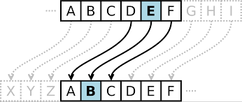
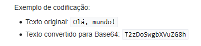

Cifra de César
Segundo wikipedia, em criptografia, a Cifra de César, também conhecida como cifra de troca, código de César ou troca de César, é uma das mais simples e conhecidas técnicas de criptografia. É um tipo de cifra de substituição na qual cada letra do texto é substituída por outra, que se apresenta no alfabeto abaixo dela um número fixo de vezes. Por exemplo, com uma troca de três posições, A seria substituído por D, B se tornaria E, e assim por diante. O nome do método é em homenagem a Júlio César, que o usou para se comunicar com os seus generais.
Base64
Base64 é um método para codificação de dados para transferência na Internet. É utilizado frequentemente para transmitir dados binários por meios de transmissão que lidam apenas com texto, como por exemplo para enviar arquivos anexos por e-mail. É constituído por 64 caracteres que deram origem ao seu nome.
